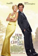
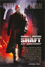

<!doctype html>

<link href="../css/base.css" rel="stylesheet">
<link href="../css/DS_Slide.css" rel="stylesheet">

<script src="../js/prototype.js"></script>
<script src="../js/DS_Slide.js"></script>

<script>
var slide = new DS_Slide_Schedule(JSON.fetch('schedule-dark.json'));

document.documentElement.appendChild(slide.node.main);
</script>

<!--
<section class="ui-slide ui-slide--schedule ui-slide--dark">
	<h1 class="ui-slide-heading">Folino Theatre</h1>
	<subhead class="ui-slide-subheading">Upcoming performance schedule</subhead>

	<div class="ui-slide-collection">
		<article class="ui-event">
			<div class="ui-event-body">
				
				<h1 class="ui-event-name">How to Lose a Guy in 10 Days</h1>
				<div class="ui-event-content"><p><strong>Screening:</strong> How to Lose a Guy in 10 Days is a 2003 romantic comedy film, directed by Donald Petrie, starring Kate Hudson and Matthew McConaughey. It is based on a short cartoon book of the same name by Michele Alexander and Jeannie Long.</p></div>
			</div>
			<p class="ui-event-time">1:00 p.m.</p>
			<p class="ui-event-date">Tuesday February 24</p>
			<p class="ui-event-admission">Free</p>
			<p class="ui-event-audience">Public</p>
		</article>
		<article class="ui-event">
			<div class="ui-event-body">
				<h1 class="ui-event-name">The Associate</h1>
				
				<div class="ui-event-content"><p><strong>Screening &amp; Special Guest:</strong> The Associate is a 1996 film starring Whoopi Goldberg, Dianne Wiest, Eli Wallach, Timothy Daly, Bebe Neuwirth, Austin Pendleton and Lainie Kazan. The film is a remake of the 1979 French film L"Associé, which, in turn, was based on Jenaro Prieto"s 1928 novel El Socio.</p></div>
			</div>
			<p class="ui-event-time">7:00 p.m.</p>
			<p class="ui-event-date">Tuesday February 25</p>
			<p class="ui-event-admission">Free</p>
			<p class="ui-event-audience">Students only</p>
		</article>
		<article class="ui-event">
			<div class="ui-event-body">
				<h1 class="ui-event-name">Chinatown</h1>
				
				<div class="ui-event-content"><p><strong>Screening &amp; Master Class:</strong> Chinatown is a 1974 American neo-noir film, directed by Roman Polanski from a screenplay by Robert Towne, and starring Jack Nicholson, Faye Dunaway, and John Huston.</p></div>
			</div>
			<p class="ui-event-time">1:00 p.m.</p>
			<p class="ui-event-date">Tuesday March 4</p>
			<p class="ui-event-admission">Free</p>
			<p class="ui-event-audience">Campus Community</p>
		</article>
		<article class="ui-event">
			<div class="ui-event-body">
				
				<h1 class="ui-event-name">Shaft</h1>
				
				<div class="ui-event-content"><p><strong>Screening &amp; Master Class:</strong> Chinatown is a 1974 American neo-noir film, directed by Roman Polanski from a screenplay by Robert Towne, and starring Jack Nicholson, Faye Dunaway, and John Huston.</p></div>
			</div>
			<p class="ui-event-time">7:00 p.m.</p>
			<p class="ui-event-date">Tuesday March 4</p>
			<p class="ui-event-admission">Tickets</p>
			<p class="ui-event-audience">Public</p>
		</article>
	</div>

	<footer class="ui-slide-organizer">Dodge College of Film &amp; Media Arts</footer>
</section>
-->